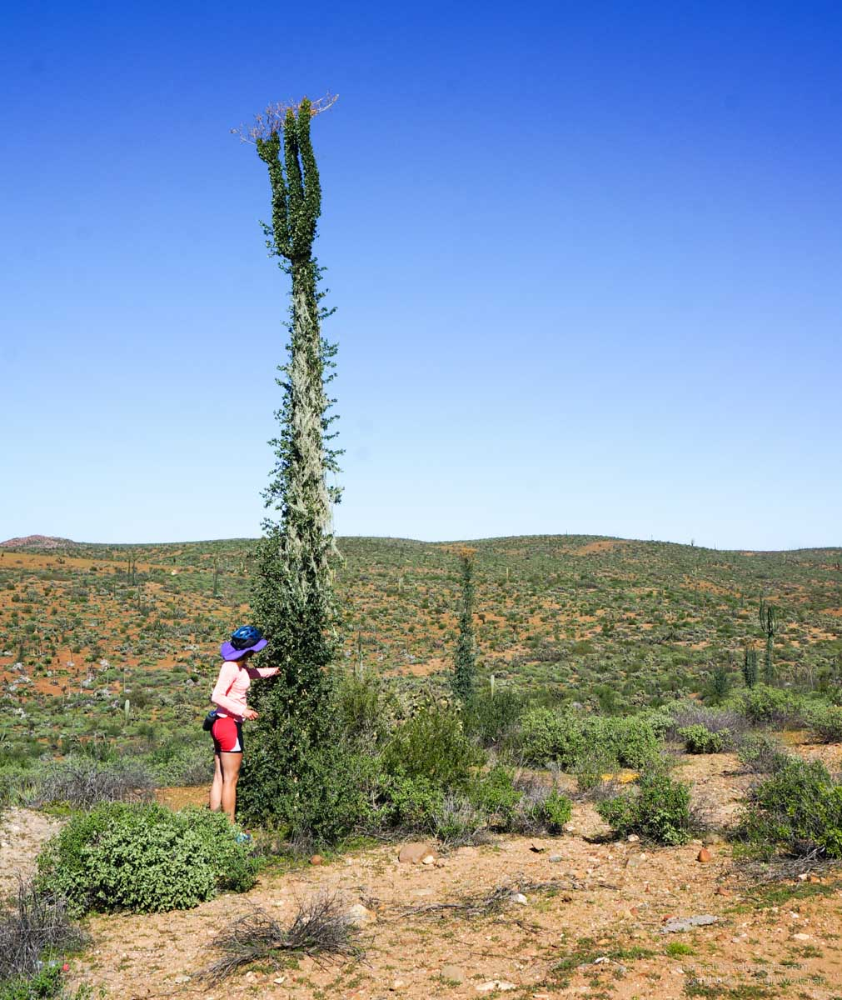
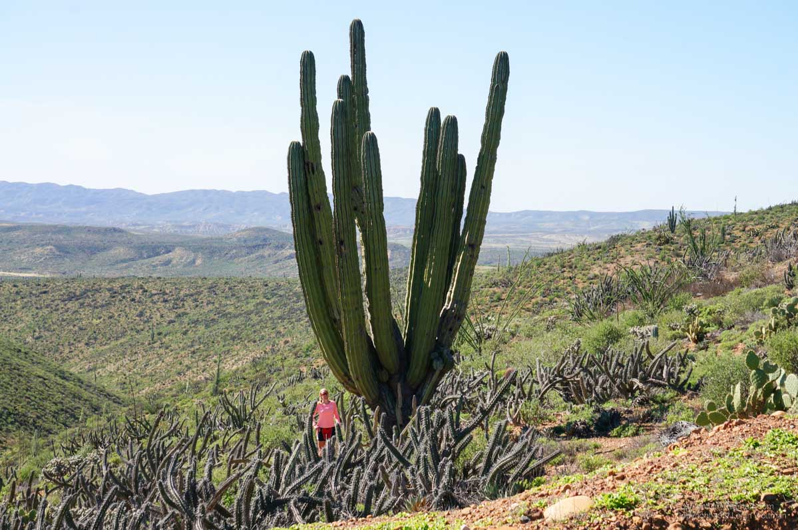
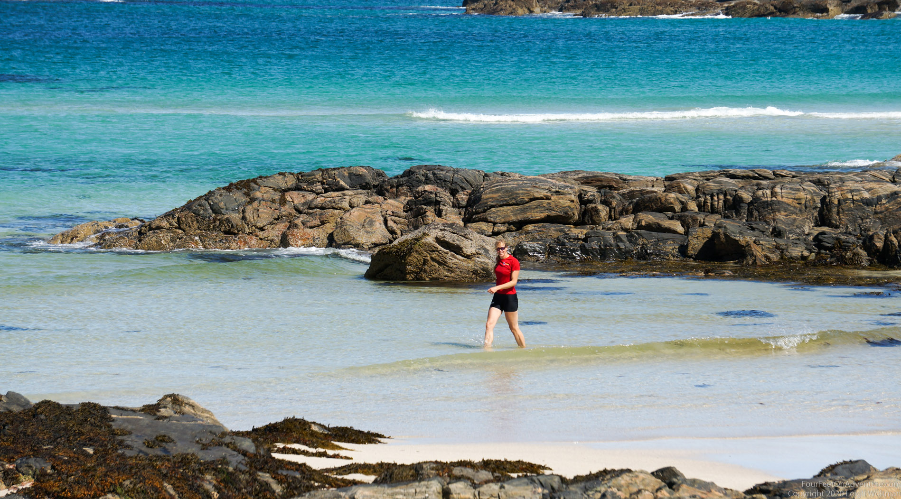
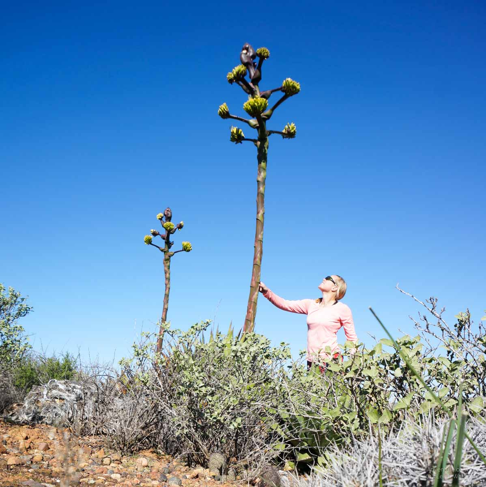
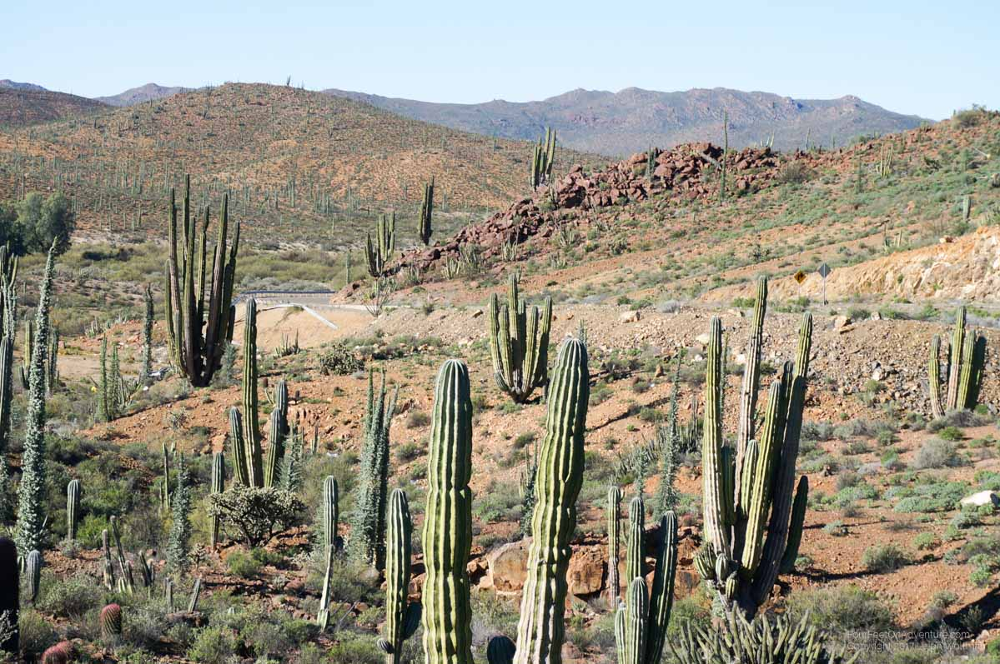
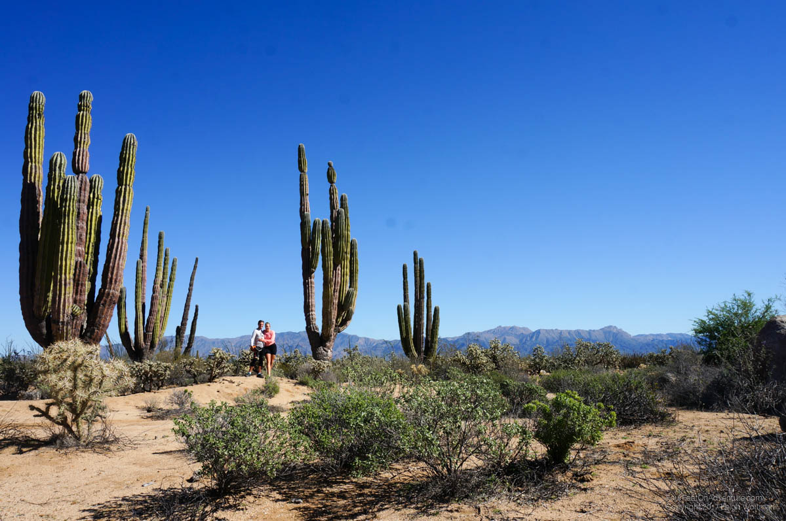

Email Us
Please send us an email, we would love to hear from you!

We’ve just passed an area called Valle de los Cirios, a super amazing desert area in the Northern part of the Baja Peninsula. I liked the cactuses so much that I drove Leigh crazy by having to stop all the time and take pictures of cactuses. We were lucky, as this area that sometimes doesn’t get water for a decade just got some water, and as a result it was green all over. So, bear with me while I introduce you to a tiny bit of the world of cactuses that we encountered before I’ll present the story behind a picture.
Let’s not start with a cactus, but with a tree. Valle de los Cirios is named after the Fouquieria columnaris, the Boojum tree or cirio. This tree has no secondary branches, its branches that contain leaves and spikes are coming directly out of the trunk. At the top it typically has about three little branches with yellow leaves that are sometimes referred to as “the fluff.” It can grow up to about 20 meters. The trunk is hollow, and the bark has little holes in it where the branches poked out, making it ideal for decoration. You can e.g. fill the hollow part with concrete and use it as a pillar, or decorate chairs or walls with flattened parts of the bark. This tree only occurs in this part of the world, and has a very peculiar appearance. (Well, I guess if you’re not used to seeing them).

The cirio is not the only giant in this area. The cardón cactus (Pachycereus pringlei) is the world's largest cactus. It can grow up to 21 meters and weigh up to 25 tons. If you’re biking around, it is not uncommon to see a mountain in the distance with this guy on top. And if you can see the contours of a cactus from far, it must be big! They are slow growing, and can be over 300 years old! They must have seen lots of things during their lifespan :).

Then there is another giant one. It’s a member of the Agave family, though I can’t figure out which species. It’s incredibly large and slow growing. It looks like just a bunch of very spiky leaves that (from experience) will for sure make a hole in your clothes if you walk too close. It blooms only once at the end of its life, and the large, clubby inflorescence forms a panicle 2–4 meters in height, whose 8–14 lateral umbels are subtended by large purple bracts. Each umbel consists of a mass of yellowish or reddish flowers which is a phenomenal sight. Sad though that the plants die after producing this beautiful flower.


I’ll stop my cactus description by saying that there were many other species around, for example yucca’s (like Joshua trees), palm trees, the fire barrel cactus (Ferocactus gracilis) and many more. They are sometimes so beautifully mixed that you wonder why gardeners even try to create something similar. It was supercool to bike through and see all that!

What’s in a picture? For the next picture, I was looking for a nice picture of both of us with the Cardon and the mountains in the background. We had just been biking for a couple of hours through a beautiful desolate mountain sandscape that reminded us of death valley. I wanted to mix that feeling with a cactus. As we stopped to the scene, I got the lenses out of the bob trailer, and one of our cans with fruit juice fell. Not just anywhere, but in a piece of glass. That resulted in a dent, a hole in the can, a fountain of juice, and a sad Leigh. We walked to the cactus. As I was setting the camera up on a rock, Leigh was looking at one of the smaller cactuses, not described above. This one had little bolls on top that looked like flowers, and apparently has a very efficient way of making sure it doesn’t get eaten. Millions of tiny little needles that you can’t really see are protecting those bolls. I was taking a bit long and suddenly heard a yelp. Leigh had tried to break off a piece and throw it at me (he told me later, at the time he said he was just touching it). Lucky for me, he missed and karma took it's course. Leigh's fingers were full of needles. I told him that we’ll take the picture quickly, but he said his fingers were swelling up. So we went back to the first aid kit to get the tweezers, and I worked on his hand for about 20 minutes. The hand seemed to be doing fine, so we went back to set up again. This time successful. I sprinted the distance between the camera and the Cardon to be in time for the picture, but forgot to take off my helmet. So I had to do it again. This time I forgot to take off my sunglasses. In the end, after I’d say a small hour, we finally took this picture :).

Please send us an email, we would love to hear from you!